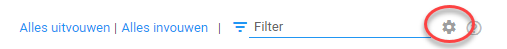
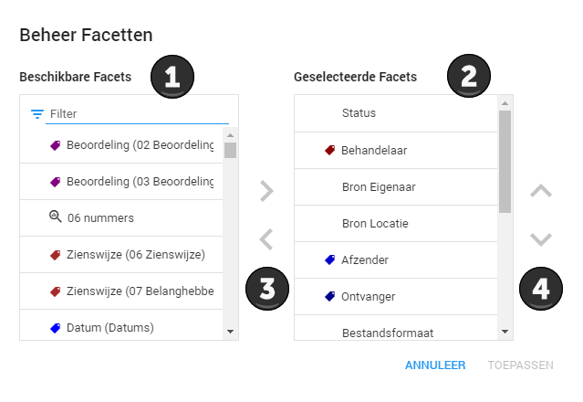
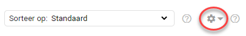
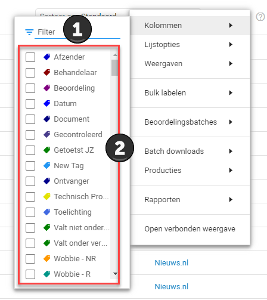
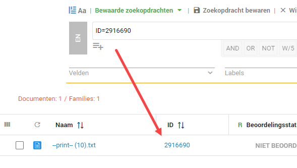
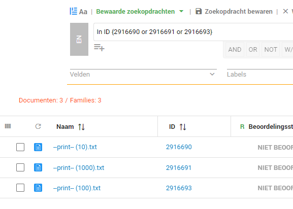
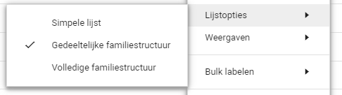
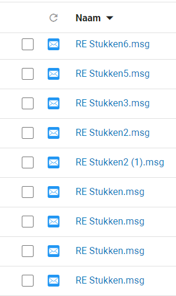
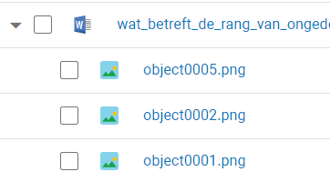
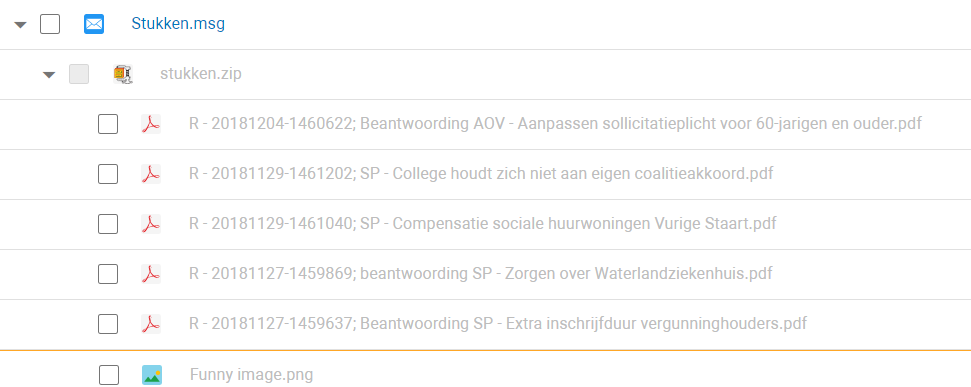

Het is mogelijk om het aanzicht te personaliseren in het Document Dashboard. Dit kan voor allebei de aanzichten. Bij de cirkeldiagrammen kunt u selecteren wat voor informatie u in de cirkeldiagrammen wilt zien. In de documentenlijst kunt u selecteren welke informatie u alvast van een document wilt zien.
Cirkeldiagrammen
Om de cirkeldiagrammen te personaliseren, klikt u op het tandwiel icoon.

U krijgt vervolgens een scherm te zien waar u links, bij 1, de mogelijke cirkeldiagrammen ziet en rechts, bij 2, de momenteel geselecteerde cirkeldiagrammen.

Als u op een van de opties klikt uit de linker lijst kunt u deze naar de rechterlijst verplaatsen door middel van de pijlknoppen bij 3. Dit werkt beide kanten op. Met 4 kunt u de positie van de geselecteerde cirkeldiagrammen veranderen. Wanneer een cirkeldiagram bovenaan staat in de lijst zal deze als eerste in uw scherm getoond worden. Als u klaar bent klikt u op Toepassen.
Voor de behandelaren zijn slechts enkele cirkeldiagrammen relevant zoals de ”ToDo" cirkeldiagram en Review Batches (indien van toepassing). In de ToDo cirkeldiagram kan bekeken worden welke documenten nog behandeld dienen te worden. Dit kan afwijken indien u binnen uw organisatie andere regels hanteert bij het beoordelen van de documenten.
Documentenlijst
Om de documentenlijst te personaliseren, klikt u op het tandwiel.

U kunt hier met Kolommen en Lijstopties het aanzicht aanpassen.
Bij Kolommen kunt u selecteren of u wilt zien of er bepaalde tags zijn toegewezen aan documenten. U kunt hier ook specifieke gegevens van een document weergeven, zoals de datum.

Bij 1 kunt u zoeken tussen alle verschillende mogelijkheden. Bij 2 kunt u selecteren welke gegevens u als kolom wilt zien in de documenten lijst.
Wij raden u aan om het volgende te selecteren: Naam, ID, Tag: Valt onder verzoek, Tag: Valt niet onder verzoek, Tag: Duplicaat en Tag:Gecontroleerd
Het gebruik van het ID-gegeven is sterk aanbevolen. Het is uniek per document en waarborgt dat u op diverse momenten exact weet welk document bedoeld wordt.
De software kent het nummer automatisch toe, en het nummer is nergens anders op gebaseerd dan op een interne toekenning. Het nummer kan worden afgedrukt op
iedere pagina van de betreffende geproduceerde documenten en legt de link tussen documenten en inventarislijsten. Omdat het ID ook als zoekopdracht toepasbaar is, kan de gebruiker snel op
een specifiek document of op een reeks van documenten zoeken.
Voorbeeld:

Of als quorum search: In ID {7053720 or 7053722 or 7053723 or ...}
Voorbeeld:

Bij Lijstopties kunt u selecteren uit de volgende opties kiezen:

Zie hieronder wat de verschillende opties inhouden:
| Simpele lijst | Gedeeltelijke familiestructuur | Volledige familiestructuur |
| U ziet enkel documenten zonder verbanden. | U ziet documenten inclusief ingevoegde documenten die onderdeel zijn van uw zoekvraag. Bijvoorbeeld een plaatje in een Word document of een bijlage bij een email. In het geval van een zoekvraag worden bovenliggende documenten in de familie getoond. | U ziet alle documenten inclusief ingevoegde documenten en bijlages binnen een document familie. In het geval van een zoekopdracht worden alle bestanden van de familie getoond. |
|  |  |  |